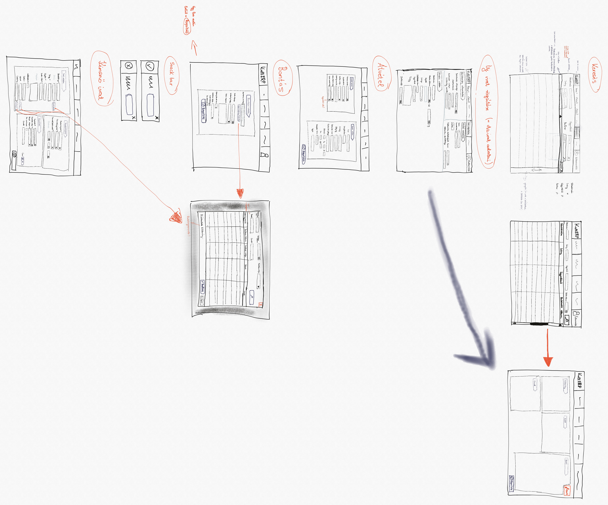
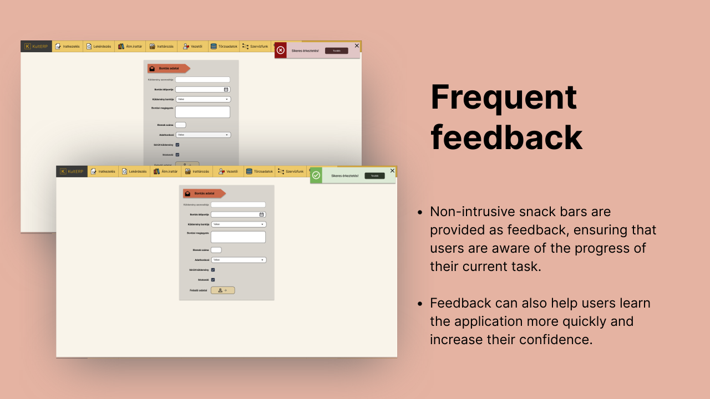
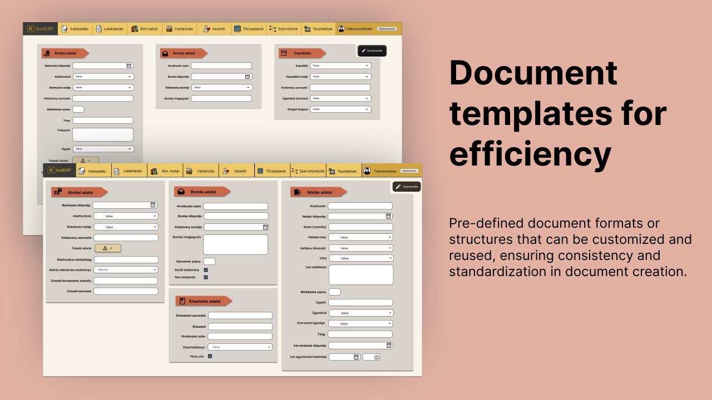
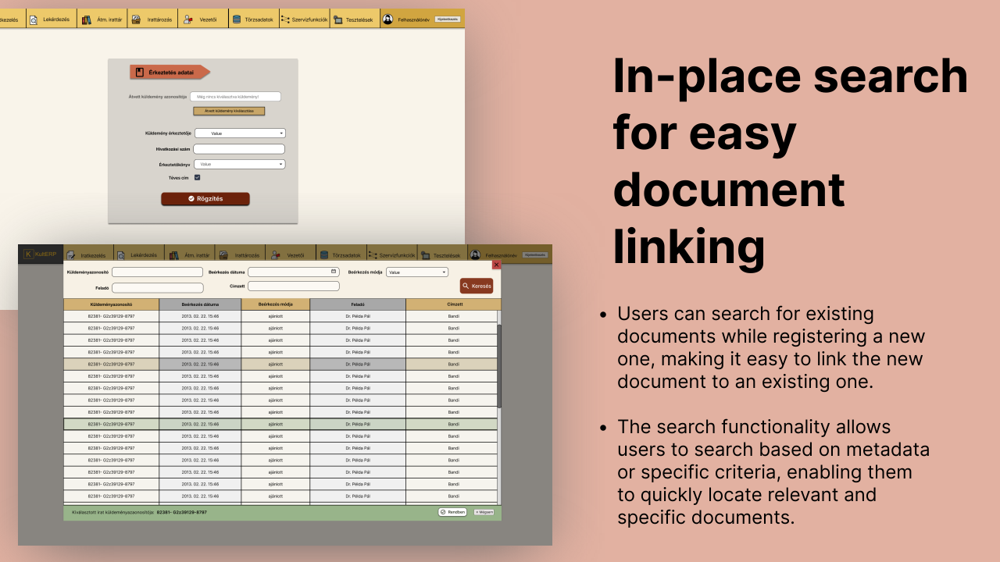
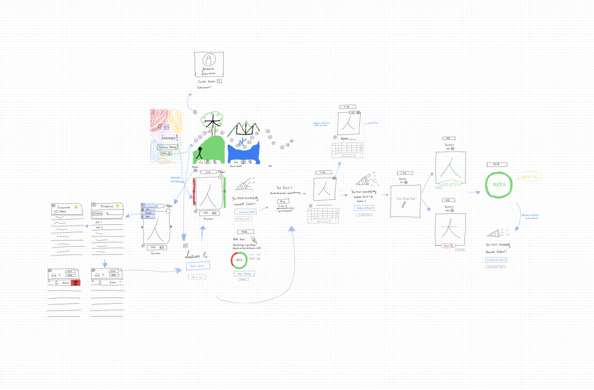
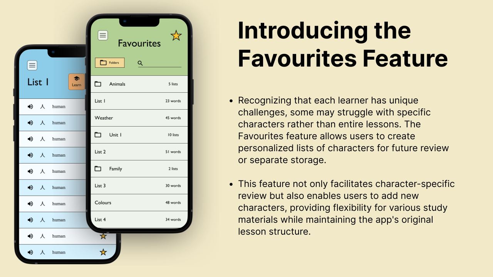
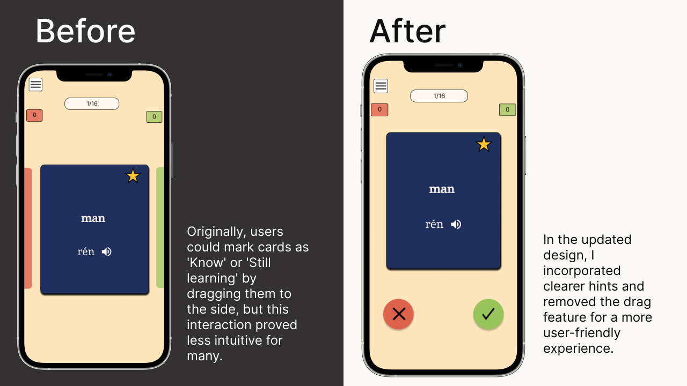
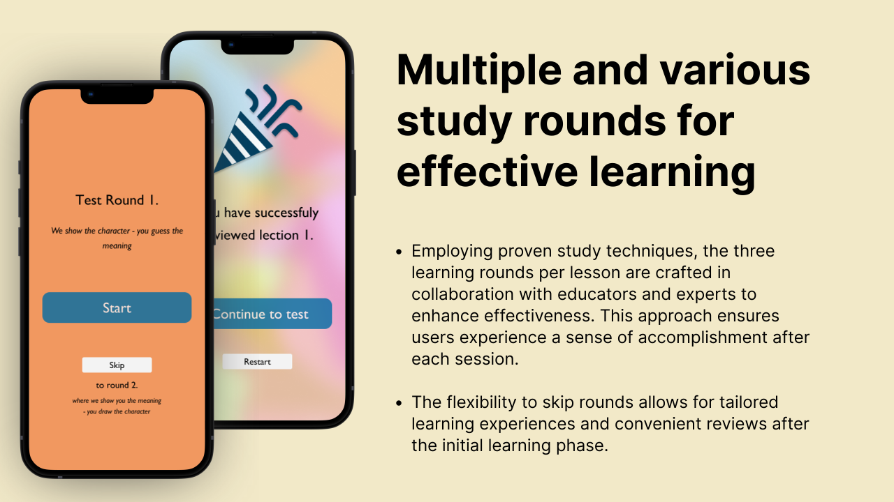
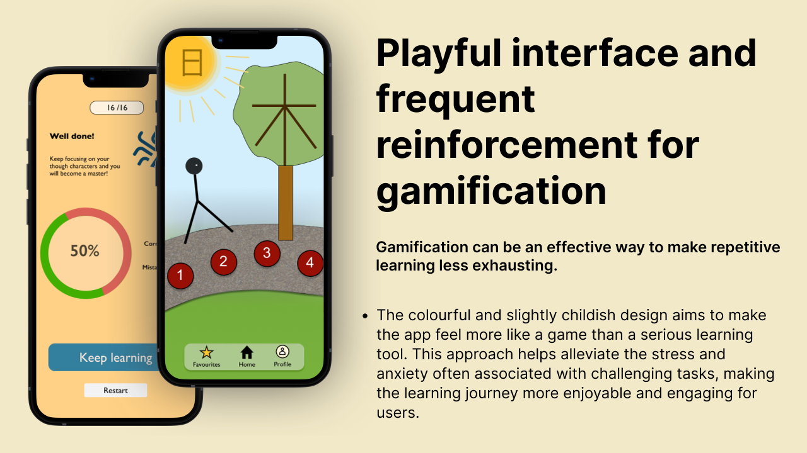
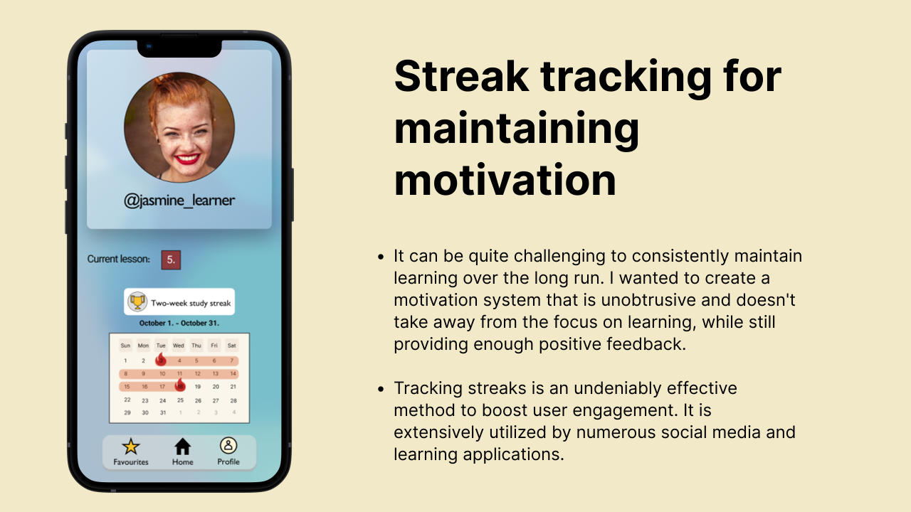

KultERP
A DMS for cultural institutions
Note:
This software is crafted and designed in Hungarian, specifically tailored for a unique client.The prototype below provides a partial preview.
Problem
A new legislation has made it mandatory for cultural institutions, such as theaters, to utilize complex Document Management Systems.
Process
Studying the legislation
Initially, we outlined the basic functionality of the application. As it needed approval from the authorities,
we had to adhere to the rules specified in recent legislation. This required us to carefully examine the relevant
laws and prepare the app's specification accordingly.
Throughout this phase, I worked closely with our business analyst and legal consultant to delineate the application's features.
Additionally, I played a significant role in preparing the requirements specification.
Preparing sketches
I have begun the design process by creating sketches. These sketches include low-fidelity versions of the screens,
which enable me to explore various layouts and user flows.

User testing
We conducted multiple rounds of user testing with our clients to ensure that the app meets their needs and facilitates a seamless transition from their current system. The continuous user testing provided valuable feedback and allowed me to reconsider my design choices several times, making the design process iterative.
The key insights:
- Initially, I employed a nearly white background for the screens. However, after receiving feedback from prospective users who found it too bright and obtrusive, I made the decision to switch to an ivory background.
- At first, I implemented multilevel dropdown menus. However, based on the feedback received during testing, it became apparent that they contributed to more complex and extended user journeys. Additionally, since a majority of our prospective users are administrators utilizing a limited number of functions, I made the decision to simplify the user journeys. This involved linking each menu item directly to a frequently used function.
Solution
By closely collaborating with clients and studying the legislation, I have designed a user-friendly interface with meaningful icons that make navigation easy. Additionally, I have reduced the learning curve of the application by considering the existing DMS system used by the theater.Here are a few main features:



UI decisions
- Skeuomorphic buttons
- Accordion
- Clarifying icons
I've opted for skeuomorphic buttons in response to the client's request for an intuitive design,
complemented by a paper-like background.
I believe that employing salient buttons will further enhance
the interface intuitiveness.
Given that one of the client's primary requirements was to eliminate the need for scrolling,
and considering that certain pages involve extensive forms, I have chosen to implement accordions.
This decision aims to meet the specified requirement and streamline the interface by condensing
lengthy forms into a more user-friendly format.
To enhance the recognizability of call-to-action and navigation elements, I've incorporated a variety of clarifying icons
into my design.
Given the software's intended purpose for everyday work use, I believe that embedding glyph icons within the
input fields and accentuating icons in the menubar significantly eases perception,
thereby enhancing the overall efficacy of the software.
Simple Hanzi
A chinese character learning app
Note:
The prototype below offers a partial preview, showcasing one card as an illustrative example.Problem
Learning characters is one of the most challenging aspects of studying the Chinese language for foreigners.
Process
Testing learning apps and studying academic literature
During the research phase, I took a deep dive into various learning apps like Chineasy, Anki, and Quizlet. The goal was to pick up useful design tricks and spot areas where these apps could improve. Additionally, I delved into academic literature on character teaching and learning techniques, helping me shape the core methodology of my app, which revolves around associative learning principles.
Preparing sketches
Having solidified the core idea for the learning method, I proceeded to sketch out the essential features of the app.
The specific sketch presented here is the culmination of multiple rounds of tweaking and refining.

Collaborating with Experts
Upon finalizing my initial sketches, I collaborated with Chinese teachers and a university professor specializing in learning methodology. Their professional insights proved invaluable, prompting several adjustments in my design to incorporate and address their valuable feedback.
One of the main features I added based on the opinion of experts:

User testing
I conducted multiple rounds of user testing, involving both my fellow students in the Chinese department and beginner language learners. The user testing yielded invaluable insights and identified pain points. This iterative process enabled me to revisit and enhance the prototype based on the valuable feedback received from users.
Improving flashcard interaction

Solution
After examining other character learning apps and techniques, I worked closely with teachers and learning experts to design an interface that facilitates the learning progress of characters.Here are a few main features:



UI decisions
- Glassmorphic design
- Hand-drawn menu page
The glass morph effect is currently popular, and I believe it could be seamlessly
incorporated into the design of this app. This effect allows for the implementation of colorful backgrounds
while ensuring legibility, creating a modern yet playful user interface.
The menu page, with its almost childish appearance, not only establishes a playful and creative tone for
the application but also incorporates Chinese characters into objects associated with their meanings.
I believe that this distinctive interface plays a pivotal role in fostering a relaxed and open mindset for users,
setting the stage for a positive learning experience as they begin their session.